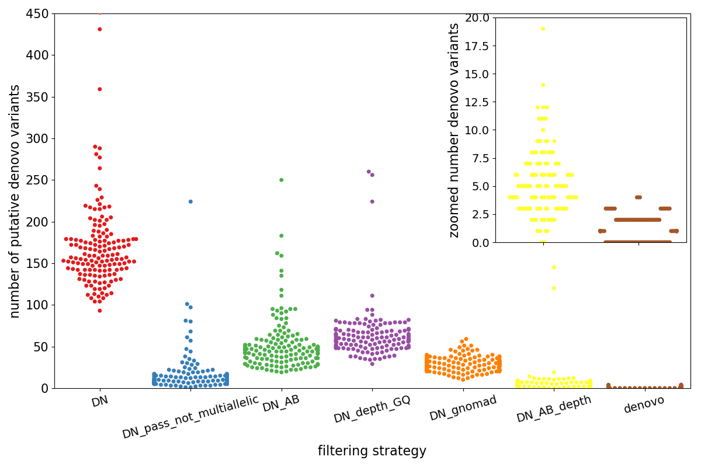
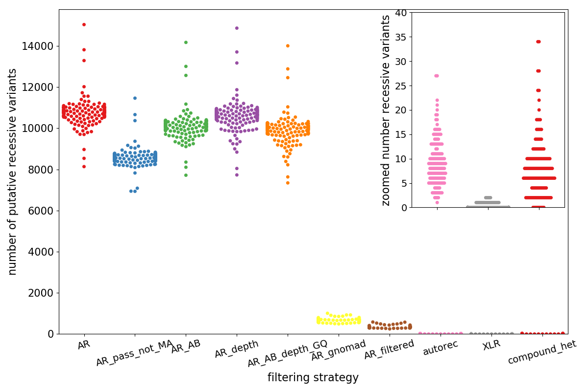

In rare, mendelian disease research, given a trio of an affected kid, healthy mom and healthy dad, we seek genetic variation that can explain the “phenotype” in the kid. In this scenario, either recessive or de novo (dominant) could match the inheritance pattern.
We expect between 0 and 2 true de novo variants per exome, but given the vagaries of sequencing, we can find many more and it’s unclear how many recessive (compound or single-site) variants we should expect per exome and what type of filtering is required to get that to a reasonable level. This post is to look at various filtering strategies in the context of rare disease trios. I did this to educate myself on what type of filtering is effective. And filtering is needed, because, for example, a trio in my test-cohort would have ~150 putative de novo variants if we looked only at genotype.
The filters (beyond the genotypes for inheritance pattern) that I’ll consider are:
FILTER: variant FILTER field is PASSGQ: genotype quality > 10AB: allele balance (alt alleles / (ref + alt)) between 0.25 and 0.75DP: depth > 7gnomad_popmax_af: gnomAD population max allele frequence < 0.001gnomad_filter: variant must have a PASS filter in gnomAD
These filters will be applied singly and then combined so we can evaluate how each reduces the number of putative variants to consider. The exact values I have chosen are arbitrary, but defensible and changing them to other sane values does not change the conclusions at all (or the actual resulting counts much). And especially when multiple criteria are combined as they will be in a real analysis, the exact cutoff tends to matter less.
Note that since this is in the context of rare disease, we can require the variant to be extremely rare in gnomAD, if, instead, we are just looking for de novo variants that may not contribute to disease, the allele frequency filter would be less useful.
Not for nothing, I’ll do this analysis using slivar and the full command to do the entire analysis will be at the end of the post, but I’ll describe each step as well.
For recessive inheritance mode, we’ll integrate variants within a gene and use phase-by-inheritance to ensure that the variants are on opposite haplotypes. That will also be done relatively automatically by slivar
The test-cohort is a set of 149 trios jointly-called using GATK. The analyses below will not look at the functional status of the variant, doing so would further cull the number of candidate causal variants.
Denovo
The plot below shows the entirety of the results for the de novo analysis.
- Each point represents a trio
- The x-axis (and the colors) separate different possible filtering strategies, generally moving to more strigent left to right.
- The y-axis indicates the putative number of de novo variants.

The left-most, red cluster labelled DN is the number of variants that are found using only the genotypes–the kid must be heterozygous and the parents homozgyous reference.
Then, moving right:
- blue (DN_pass_not_multiallelic): if we require variants to have a PASS FILTER, we can already dramatically reduce the number of variants.
- green (DN_AB): requires an allele balance in the kid > 0.25 and < 0.75 and 1 or fewer total alternate counts in the parents.
- purple (DN_depth_GQ): requires all samples to have depth > 7 and genotype quality > 10
- orange (DN_gnomad): requires the variant to be ‘PASS’ in gnomAD and to have a population max allele frequency < 0.001
- yellow (DN_AB_depth): combines the
DN_ABandDN_depth_GQfilters. - brown (denovo): combines the
DN_AB_depthandDN_gnomadandDN_pass_not_multiallelicfilters
Note that the inset zooms in on the final 2 sets of variants (DN_AB_depth and denovo). In reality, a researcher is likely to
examine only variants in the denovo group, meaning that she can examine between 0 and 4 variants per sample.
Also note that although the depth and allele balance filters (in yellow) still leave a couple of samples with > 100 candidate variants those are removed when the additional gnomAD filters are applied.
Combining more lenient filters
That shows how effective combining depth, allele balance, gnomAD allele frequency and FILTER can be. And the blue swarm shows that GATK is in fact, a very good caller, yielding very few bad (spurious de novo) calls that have a PASS filter.
To demonstrate this combination effect further, we compare the final denovo set of calls from above with a lenient set that
requires only:
- depth 5 or more (instead of 7)
- genotype quality of 5 or more (instead of 10)
- allele balance between 0.2 and 0.8 (instead of 0.25 and 0.75)
- gnomAD allele frequency < 0.01 (instead of 0.001)
These are set low enough to make an analyst squirm, but not so low as to be unreasonable.
This increases the total number of de novo calls from 172 in the set plotted above to 188, meaning that this yields 1 additional candidate de novo for about every three trios. In short, relaxing constraints might be a reasonable strategy from the start because once a number of filters are combined, the likelihood of a questionable variant sneaking through are low.
NOTE that this has not yet filtered on the functional status (missense/stop-gained/etc.) of the variant, which would lower the number even more.
Recessive Variants
Recall that recessive variants are inherited on different haplotypes, either at a single site or as a compound heterozygote. In order to call compound heterozygotes, we must aggregate variants by gene and then phase by inheritance. Given 2 sites in a compound het in a trio with unaffected parents and affected kid:
- kid: 0/1, mom: 0/1, dad: 0/0
- kid: 0/1, mom: 0/0, dad: 0/1
we know that the kid inherited the alternate allele at site 1 from mom and at site 2 from dad and therefore, they must be on different haplotypes and could therefore knock out both copies of the gene.
In order to find sites like this, we must first find sites that are heterozygotes in the kid and 1 and only 1 parent and then use the phase-by-inheritance logic and gene aggregation to find pairs like above. An additional wrinkle is that we will also allow 1 of the pair of sites to be a de novo; though we can’t phase the de novo, we expect there to be few enough putative de novo’s that it should not yield too many false positives.
Finally, we can also find sites that are simple autosomal recessives where both parents are heterozygotes, and the kid is homozygous alternate, along with x-linked recessives where a son receives a variant allele from mom that appears as a heterozygote in mom and as homozygous alternate in the son (since he has only 1 copy of X).
The plot below shows the entirety of the results for the recessive analysis.
- Each point represents a trio
- The x-axis (and the colors) separate different possible filtering strategies, generally moving to more strigent left to right.
- The y-axis indicates the putative number of recessive variants.

In this plot, the left-most, red swarm, labeled ‘AR’, is the meta-set of variants that could possibly be any type of recessive variant. It only requires kid to be heterozygous or homozygous and mom or dad to be heterozygous and neither mom nor dad to be homozygous alternate
Then continuing right across the plot:
- blue (AR_pass_not_MA): limits the
ARvariants to PASS and not multi-allelic - green (AR_AB): limits the
ARvariants to have AB > 0.25 and AB < 0.75 for sites where the kid is heterozygous (remember this set also incluces variants where the kid is hom-alt) - purple (AR_depth): limits AR variants to have depth > 7.
- orange (AR_AB_depth_GQ): requires variants to pass
AR_ABandAR_depthand requires kid, mom, and dad to have GQ > 10 - AR_gnomad (yellow): requires the
ARvariant to have a populatiom max allele frequency < 0.005 in gnomad. - AR_filtered (brown): requires
AR_AB_depth,AR_pass_not_MA, andAR_gnomad– so depth > 7, GQ > 10, PASS and gnomad frequency < 0.005 - autorec (pink): this requires
AR_filteredand mom and dad to be heterozygous and kid homozygous alternate – so this is a single-site recessive - XLR (gray): X-Linked-Recessive. requires the mom to be het, dad hom ref, and kid male and hom-alt, PASS, on the X chromosome, depth > 7, GQ > 10, mom AB > 0.2 and < 0.8.
compound_het: this takes theAR_filteredvariants and thedenovovariants from above and aggregates by gene and phases-by-inheritance.
autorec, XLR, and compound_het are what an analyst would examine. Although the base-line is much higher here, filtering with gnomad (yellow) is
very effective, dropping the number of variants from ~10,000 to ~500. The additional drop to compound-het (red) shows the power of phase-by-inheritance. Note that
the numbers for compound-hets are variants not pairs so in this cohort, we’d look at fewer than 5 genes per trio, on average. Again, remember that this
does not consider the functional effect of the variant so that would further reduce the number of variants here.
On average, an analyst would have to look at about < 10 single-site autosomal recessives (pink), 1 or 2 x-linked-recessive variants (gray) and about 5 compound-het pairs per trio. In addition to the 1-2 de novo variants per trio, this simple filtering results in 15 high-quality candidates for the most common analyses performed in rare disease research.
Slivar
All of the filtering described above was done with one slivar command followed by an additional one to call compound heterozygotes.
slivar allows users to write simple (javascript) expressions that get applied to every trio (or sample or user-specified group) inferred from a pedigree file in the VCF.
Below is an especially hairy command because it applies every filtering strategy plotted above. For actual research, only the final, combined commands are needed, so please use the simple commands documented here that will be effectively identical to this.
However, for the sake of showing the power and flexibility of slivar, here is the full command:
slivar expr --vcf $bcf --ped $ped \$
--pass-only \$
-g /home/brentp/src/slivar/gnomad.hg38.zip \$
-o vcfs/$cohort.bcf \$
--trio "trio_specific:mom.alts > 0 || dad.alts > 0 || kid.alts > 0" \$
--trio "DN:mom.alts == 0 && dad.alts == 0 && kid.alts == 1" \$
--trio "DN_pass_not_multiallelic:hasSample(INFO, 'DN', kid.id) && variant.FILTER == 'PASS' && (!variant.is_multiallelic)" \$
--trio "DN_depth_GQ:hasSample(INFO, 'DN', kid.id) && kid.DP > 7 && mom.DP > 7 && dad.DP > 7 && mom.GQ > 10 && dad.GQ > 10 && kid.GQ > 10" \$
--trio "DN_AB:hasSample(INFO, 'DN', kid.id) && kid.AB > 0.25 && kid.AB < 0.75 && ((mom.AD[1] + dad.AD[1]) < 2)" \$
--trio "DN_AB_depth:hasSample(INFO, 'DN_AB', kid.id) && hasSample(INFO, 'DN_depth_GQ', kid.id)" \$
--trio "DN_gnomad:hasSample(INFO, 'DN', kid.id) && !('gnomad_popmax_af_filter' in INFO) && INFO.gnomad_popmax_af < 0.001" \$
--trio "denovo:hasSample(INFO, 'DN_gnomad', kid.id) && hasSample(INFO, 'DN_AB_depth', kid.id) && hasSample(INFO, 'DN_pass_not_multiallelic', kid.id)" \$
--trio "lenient_denovo:hasSample(INFO, 'DN_pass_not_multiallelic', kid.id) && kid.DP > 5 && mom.DP > 5 && dad.DP > 5 && mom.GQ > 5 && dad.GQ > 5 && kid.GQ > 5 && kid.AB > 0.2 && kid.AB < 0.8 && INFO.gnomad_popmax_af < 0.01 && !('gnomad_popmax_af_filter' in INFO)" \$
--trio "AR:(mom.alts == 1 || dad.alts == 1) && kid.alts >= 1 && mom.alts != -1 && dad.alts != -1 && mom.alts != 2 && dad.alts != 2 && kid.alts > 0" \$
--trio "AR_pass_not_MA:hasSample(INFO, 'AR', kid.id) && variant.FILTER == 'PASS' && (!variant.is_multiallelic)" \$
--trio "AR_depth:hasSample(INFO, 'AR', kid.id) && kid.DP > 7 && mom.DP > 7 && dad.DP > 7" \$
--trio "AR_AB:hasSample(INFO, 'AR', kid.id) && ((kid.alts == 1) == (kid.AB > 0.25 && kid.AB < 0.75))" \$
--trio "AR_AB_depth_GQ:hasSample(INFO, 'AR_AB', kid.id) && hasSample(INFO, 'AR_depth', kid.id) && kid.GQ > 10 && mom.GQ > 10 && dad.GQ > 10" \$
--trio "AR_gnomad:hasSample(INFO, 'AR', kid.id) && !('gnomad_popmax_af_filter' in INFO) && INFO.gnomad_popmax_af < 0.005" \$
--trio "AR_filtered:hasSample(INFO, 'AR_AB_depth_GQ', kid.id) && hasSample(INFO, 'AR_pass_not_MA', kid.id) && hasSample(INFO, 'AR_gnomad', kid.id)" \$
--trio "autorec:hasSample(INFO, 'AR_filtered', kid.id) && kid.alts == 2 && mom.alts == 1 && dad.alts == 1" \$
--trio "XLR:mom.alts == 1 && dad.alts == 0 && kid.alts >= 1 && variant.FILTER == 'PASS' && (!variant.is_multiallelic) && (variant.CHROM == 'chrX' || variant.CHROM == 'X') && INFO.gnomad_popmax_af < 0.01 && mom.DP > 10 && dad.DP > 7 && kid.DP > 7 && kid.sex == 'male' && kid.GQ > 10 && mom.GQ > 10 && dad.GQ > 10 && mom.AB > 0.2 && mom.AB < 0.8 && kid.AB > 0.3" \$
note the --trio lines that indicate an expression using mom, dad, kid preceded by a label like DN which were used as the plot labels above
and which slivar injects into the INFO of the output vcf whenever there is a passing expression.
The command to do the compound heterozygote filtering is:
bcftools csq -s - --ncsq 40 -g $gff -l -f $fasta vcfs/$cohort.bcf -O u \
| slivar compound-hets -f BCSQ -i 2 --sample-field AR_filtered --sample-field denovo -p $ped > vcfs/$cohort.ch.vcf
which uses bcftools csq to quickly annotate with gene (and
variant functional consequence which we haven’t used in this analysis). slivar then gets the BCSQ field
and extracts the gene name from the 2nd pipe-delimited field (-i 2) and uses that gene for aggregation.
Again, it’s recommended to follow the instructions here, but the code to do this full analysis on your own VCF is here